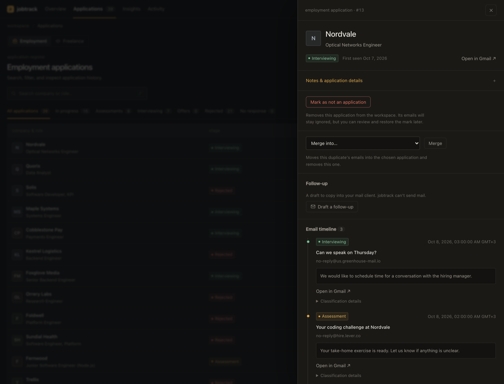

Finds every stage
Applications, assessments, interviews, offers and rejections, grouped by company and role.
jobtrack reads the recruiting mail you already received and turns it into applications, timelines and next steps. No spreadsheet to keep up. Open source and local.
pipx install jobtrack
Python 3.10+ · macOS, Linux, Windows · Free, MIT license

The overview, with fictional demo data.
Applications, assessments, interviews, offers and rejections, grouped by company and role.
Each email with its sender, date, the snippet that earned its label, and a link back to the Gmail thread.
Notes, follow-up dates, interview times you can add to a calendar, and a list of what needs attention.
Response rate, application volume by week, and your own weekly or monthly targets.
When the mail disagrees with the label, fix it once. Later syncs keep your correction.
Browse in the browser, or script it: jobtrack list --active, CSV export, weekly digest.
Every event shows how it was classified, so you can trust the label or correct it. Nothing is hidden behind a score.

Gmail gmail.readonly. It can never send, delete or modify mail.
A local SQLite file. No account, no telemetry, no server run by the project.
Offline rules by default. Optionally add a local model or your own key for a hosted one, in which case the email being classified is sent to that provider.
pipx install jobtrack
Then jobtrack auth and jobtrack serve. The README walks through creating your own Google OAuth client, the one setup step.